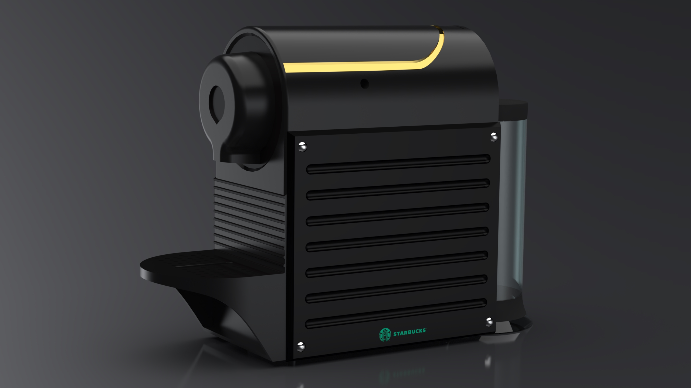

Coffee Maker: Photorealistic Rendering
One of the first render projects I've worked on in the Keyshot environment. The concept design was prepared in SolidWorks, which was then ported to Keyshot's render engine. Some of the techniques I used during this render were - metallic finishing, frosted glass finishing & decals. A fun side project, that taught me some handy tools in rendering I use till to this day.
Design Tool: SolidWorks
Render Tool: Keyshot 6.0

